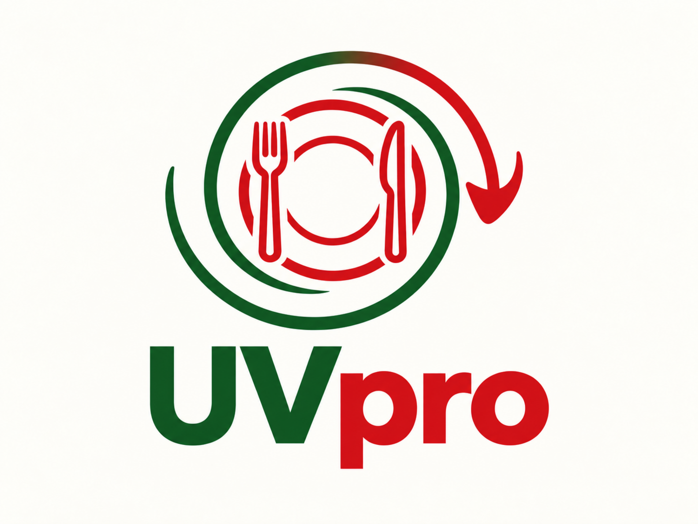
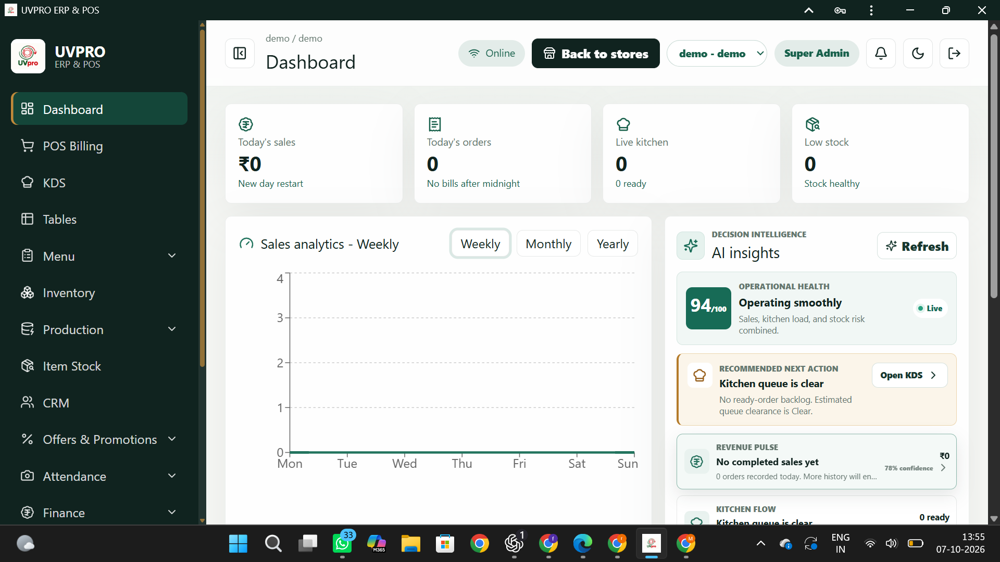
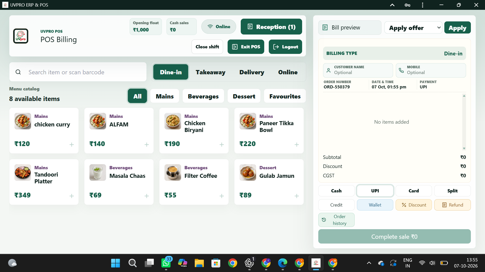

Fast restaurant POS
Streamlined billing supports quick order entry, clear totals, payment handling, and a smoother checkout experience.

Restaurant technology
UVPRO brings restaurant billing and day-to-day operations into one connected system. It helps restaurants serve faster, coordinate kitchen and table orders, control stock, manage finance, and understand performance from a single operational view.
Product experience


Streamlined billing supports quick order entry, clear totals, payment handling, and a smoother checkout experience.
Bring table orders, takeaway, kitchen coordination, and service status into one practical workflow.
Track ingredients, purchasing, sales trends, and daily performance with clearer operational visibility.